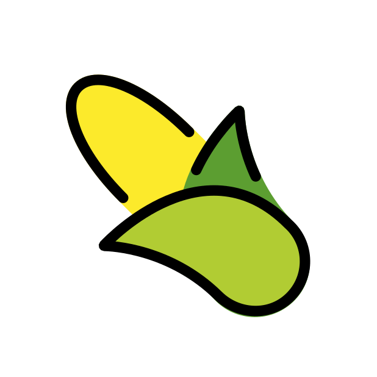
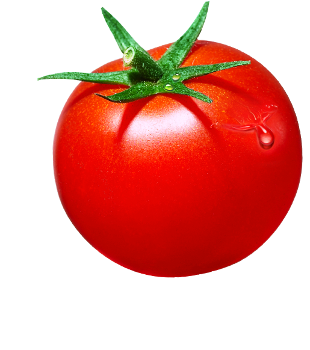
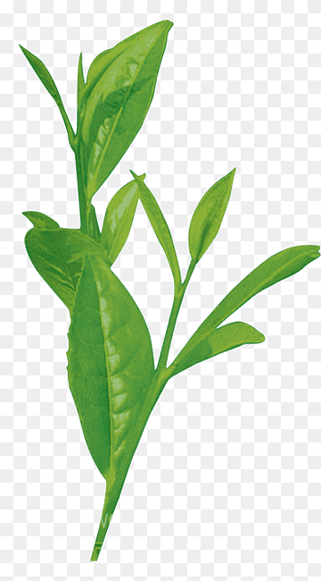
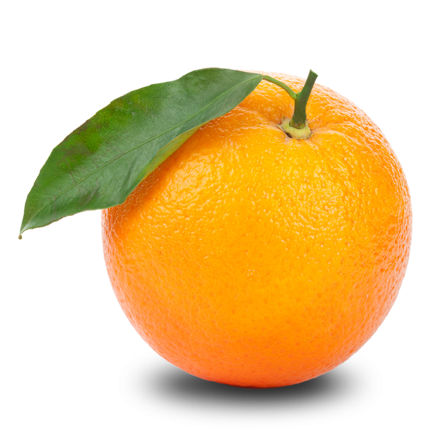

Haritada sınır çizimi
GPS veya elle nokta ekleyerek tarla poligonu oluşturulur, alan hesabı kaydedilir ve detay ekranına aktarılır.
Tarlayı çiz, ürünü yerleştir, hava ve toprak kararlarını takip et. Tarlam; internet zayıfken bile kayıt tutan, Türkçe konuşan ve çiftçinin günlük işini sadeleştiren mobil yardımcıdır.
Sayfa gerçek uygulama modüllerini temel alır: özet ekranı, tarlalar, takvim, hastalık analizi, toprak analizi, maliyet defteri ve kaynakça akışı.
GPS veya elle nokta ekleyerek tarla poligonu oluşturulur, alan hesabı kaydedilir ve detay ekranına aktarılır.
Sıcaklık, nem, rüzgâr, yağış, pH ve toprak nemi tarlanın karar kartlarında sade Türkçe ile gösterilir.
Penman-Monteith ETo yaklaşımıyla 14 günlük sulama takvimi ve gerekçe metni üretilir.
Bitki fotoğrafı, sağlık durumu, tedavi süreci ve saha notları tek tarla kaydında tutulur.
Tohum, gübre, ilaç, işçilik ve yakıt giderleri girilir; dönem sonu kâr tahmini izlenir.
Yerel kayıtlar cihazda tutulur; bağlantı döndüğünde arka planda güvenle eşitlenir.
Arayüz, sahadaki kullanım sırasına göre düşünülür: önce tarlayı tanı, sonra ürünü seç, ardından bakım kararını uygula.
Harita üzerinde sınır belirlenir, dekar bilgisi hesaplanır, konum yerel veritabanına kaydedilir.
Bitki uygunluk raporu; sıcaklık, pH, yağış ve takvim bilgisine göre Türkçe sonuç üretir.
Özet ekranı sulama, ilaçlama, hasat ve kayıt görevlerini tek bakışta gösterir.
Çevrimdışı girilen kayıtlar kuyrukta bekler; internet geldiğinde çakışma zaman damgasına göre çözülür.
Uygulamada kullanılan ürün varlıkları siteye de taşındı. Bu yaklaşım sayfanın genel stok görsel gibi değil, gerçek uygulamanın uzantısı gibi görünmesini sağlar.




APK indirme bağlantısı doğrudan kök dizindeki dosyaya bağlandı. Statik site olarak yayınlandığında aynı dosya birlikte yüklendiği sürece buton çalışır.